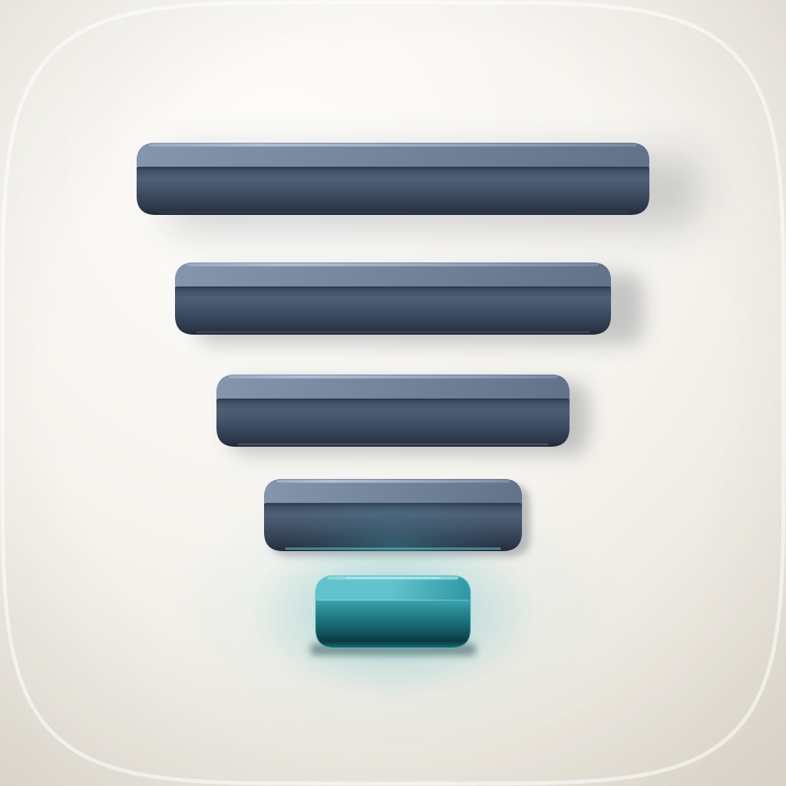
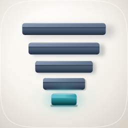
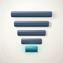
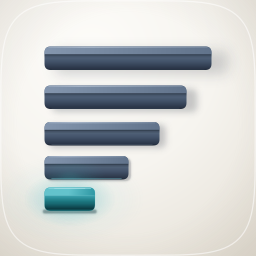
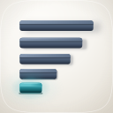
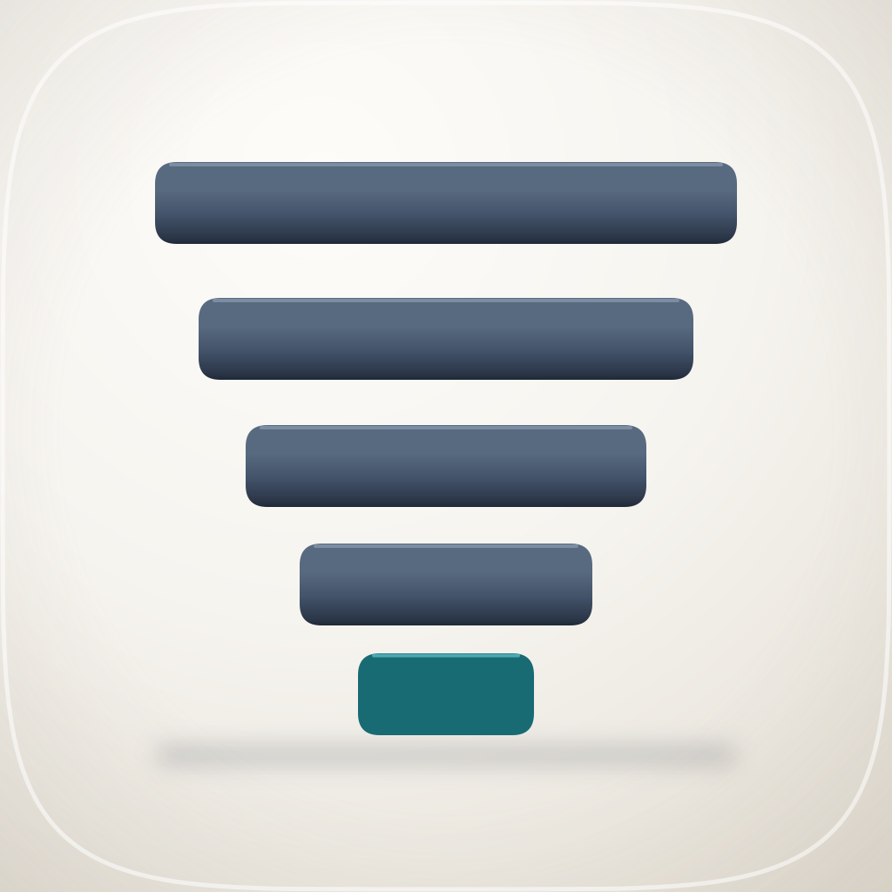
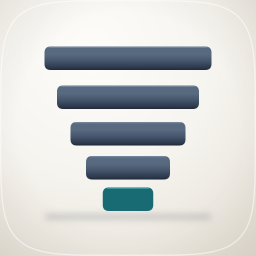

| Take | Hero at 1024, then renders at 128 / 64 / 48 / 32 / 16 css px (2× retina sources), plus the 16px squint magnified | Rubric | Verdict |
|---|---|---|---|
| ship · icon.svghand-authored layered SVG (Engine A, round 8) — SHIPS |
   |
11 / 12 | Non-negotiables 1–4 all pass on real renders: the tile is authored full-bleed with the squircle applied at export, the ink bbox centres on (511, 521) at 65% of the tile, the silhouette is nameable as a narrowing stack, and a centre-column probe counts five separate bars at 128, 64, 48 and 32px. Docked on #10: flattened to a mono tint the five-slab structure and the landed slab's contact line both survive, but the accent's emission does not — the well is a chroma shift at near-equal luminance, so in grey the narrowest slab reads as the palest rather than as the lit one, which is the apple-13 inversion this direction exists to refuse. Fixing it would mean darkening the slab that has to look lit in the register that actually ships. |
| left · icon-A-left.svghand-authored layered SVG (Engine A, alternative composition) |
  |
8 / 12 | Identical material, identical stand-off decay, one change: the five slabs share a left edge instead of a centre line. It reads as a horizontal bar chart with the shortest bar highlighted — i.e. as "the smallest value", which is the meaning inversion the direction was briefed to avoid, and depth does not rescue it because a chart's bars have depth too. It also loses #2 perceptually: the mass collapses to the left and the lower-right quadrant empties out, so the tile is bbox-centred while looking off-centre. This take is why the ship take is centred, and it is on the sheet so that choice rests on a render rather than on an assertion. |
| v1 · icon-A-v1.svghand-authored layered SVG (Engine A, first draft) |
  |
7 / 12 | The same five widths and the same palette with the signature move removed: no top face, no stand-off, one shared floor shadow. It is the take that proves the direction needs depth. Fails #8 (nothing is at any height, so the shadow under the stack belongs to nothing), #11 (with the stand-off gone there is no nameable device left and it is glyph-on-gradient), and #6 (the accent is a flat chip, so the teal is decoration rather than the one lit element). It also lands squarely in the two readings the direction has to avoid — a flat centred stack of rectangles is a bar chart or a signal meter, both of which invert the meaning. Nothing was salvaged; every parameter it establishes was kept and every material choice was replaced. |
bg cushion tile and the accent's wide well, mid the five cast shadows that are the only record of stand-off, fg the four slate slabs, highlight the accent slab with its tight well and the one rim its light puts on the slab above — carrying identity in shape and value with hue as the last 10%, so it is not a baked raster and does not depend on one ground colour. It is a decorative marketplace PNG rather than Icon Composer input, so the squircle mask and the material are correctly baked into the exports; fidelity.py structure passes at 39 paths, 29 gradients, 3 filters, 4 named groups. The palette was sampled out of references/corpus/apple-2026/ rather than described — apple-26 for the porcelain ramp and the emissive-on-porcelain recipe, apple-13 for the stacked-slab construction and the value inversion to avoid, apple-12 for one bounded accent on a warm-neutral ground — and the ground constants are lifted verbatim from plugins/shipyard/assets/build_icon.py. Known liabilities to revisit: (1) at 16px the accent's hue is lost, so the tile reads as a dark narrowing wedge and the "which scope was earned" half of the story goes with it — the silhouette survives, the accent does not; (2) under a mono tint the narrowest slab is the palest mass, the #10 dock above; (3) report is the closest neighbour on this shelf and is also stacked bars on porcelain with one accent, separated here by inverted value (dark slate slabs against its pale cards) and by hue, not by outline; (4) the slate at H219 and the teal at H188 are only 31° apart, which is good for palette economy and costs the accent some separation at small sizes; (5) three feGaussianBlur filters carry the cast shadows and the well, so a renderer without filter support shows the tile flat and the signature move disappears entirely — verified in rsvg-convert.| Measured on the shipped 1024 render | Value |
|---|---|
| slate front face vs tile | 7.48:1 |
| slate lit top face vs tile | 3.48:1 |
| accent front face vs tile | 5.63:1 |
| accent lit top vs its own front face | 2.94:1 — matched to the slate slabs' 2.59:1 so the fold reads as one object |
| accent lit top vs slate lit top | 1.82:1 |
| ink bbox | (178, 186)–(844, 856), 666×670, centre (511, 521) against a 512 target |
| object fills | 65% × 65% of the tile (composition constant: 55–65%) |
| 32px luminance spread | 0.784 |
| 16px luminance spread | 0.733 |
| countable bars, centre column | 5 at 128px (runs 11/12/11/11/8 device px), 5 at 64, 5 at 48, 5 at 32 |
| Round | What the render said, and what changed |
|---|---|
| r01 | Shadows drawn straight below each slab and scaled by blur: all five read as the same grey smear and nothing floated, so the signature move was absent from the artifact that was supposed to carry it. |
| r02 | 50+26px slabs read as a stripe with a highlight on it. Raised to 62+32 and widened the top face to a third of the object, which also stops five centred bars reading as a loading skeleton. Accent lit face measured 1.02:1 against the slate lit faces — identical luminance, adjacent hue — so the accent read as "the teal one" rather than as the lit one. |
| r03 | Offset the shadow along the key, down-and-right, so each is a displaced copy of its own slab rather than a pool under it. Wells re-centred on the slab's middle: they had been pooling downward into empty porcelain and were the brightest softest thing in the tile. Fold given a real AO band; rim light given a falloff instead of one opacity end to end. |
| r04 | The displacement worked and cost the thing the direction is graded on: a 94px shadow offset 34px down pokes below its own slab and the countability probe read SIX bars at 128px. Traded vertical offset for horizontal — a higher key light, same read, shadow slides onto clear porcelain instead of stacking under the slab. Back to 5. |
| r05 | The accent measured 3.43:1 across its own fold where every slate slab measures 2.23:1, so its pale top read as a mint cap stuck onto a dark body. Body now starts bright immediately under the fold and deepens from there (apple-06's emissive-from-within tell); lit face kept chromatic rather than near-white. |
| r06 | Rubric #7: the slate lit top faces measured 2.89:1 against the tile, under the 3:1 floor, with a third of each slab's area below the bar. Darkened ~12% → 3.48:1, which also widened the accent's lit face from 1.51:1 to 1.82:1. |
| r07 | The mono-tint check found the #10 problem: flattened to grey the accent was the palest mass. Deepened its body and raised the well, on the reasoning that a pool on the ground can say "lit" where an object's own luminance can only say "pale". |
| r08 | The well's radius (118) barely exceeded the slab's own half-width (101), so nearly all of it was painted and then covered — it measured 1.08:1 because there was almost no visible ring. Both wells re-proportioned off the slab and squashed to ellipses, since a circular pool around a 202×94 slab either misses the sides or floods above and below. |
python3 audit_sheet.py render . (1024 / 256 / 128 / 96 / 64 / 32 sources); verified by its check subcommand. Every take is reproducible from one generator — python3 build_icon.py, --variant v1, --variant left — and the master rebuilds byte-identically, so a row on this sheet can be regenerated rather than trusted. The direction, the sampled palette, the eight rounds and the full liability list are in icon-notes.md beside this file.